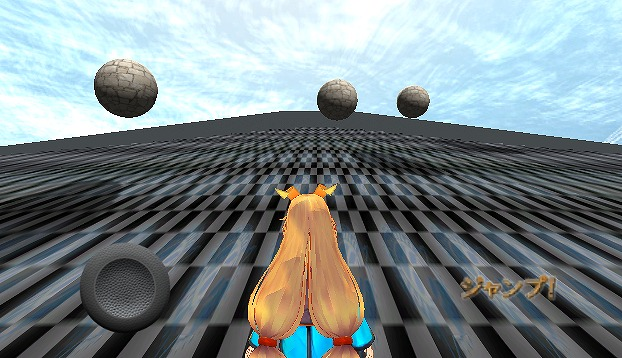
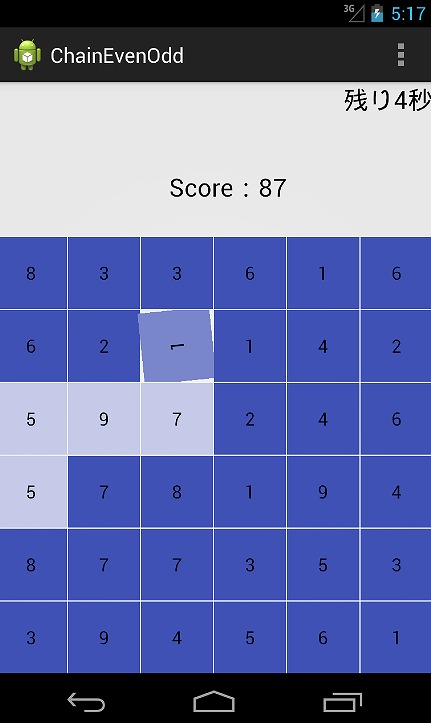

製作者
Unityちゃんに坂を登らせろ
Unityちゃんを操作してボールをよけながら坂を登らせるだけのゲームです．
PC版とAndroid版があります．
Unityちゃん可愛い！！
 |
Android版ダウンロード
奇数か偶数をつなぎまくれ！
奇数または偶数だけをつないでいき得点を稼ぐゲームです．
そーてっくさんが考えたゲームを実装しました．
Androidのゲームです．
GoogleAppEngineを用いて，オンラインランキングを実装しています．
 |
ダウンロード
- このサイトはリンクフリーです - You can link to this website freely.
- コンテンツの著作権は OUCRC に帰属します - All rights of the entire contents are reserved to OUCRC.